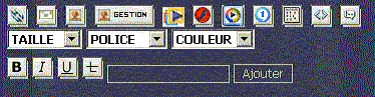
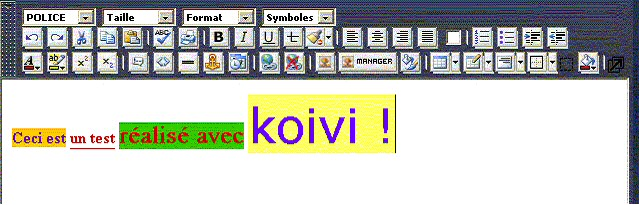

Koivi wisiwyg editor
Xoops Koivi is a wysiwyg text editor. Wysiwyg is the acronym of "What You See Is What You Get", easy ?
The goal of this tool is to produce HTML code without any coding skill.
How does it work ?
In any good text processor if you want to have a bold font or underline a text you'll just have to click on a button. Under XOOPS (without koivi) we have the same features but with less options.
You can see on this screenshot the standard XOOPS editor

And now you can see the differencies with the screenshot when koivi is installed in XOOPS

Immediately, we can realize that koivi offers many possibilities compared with the standard XOOPS editor ;-).
To ensure that it's quite clear for everyone, let us see a concrete example :
Here is a line of text that I wrote with koivi, while clicking on the icons as you would have done with any text processing software :

and now the result where you ask to koivi to show HTML code :

To sum up, Koivi offers more possibilities than the standard XOOPS editor and in particular makes it possible to rock between the wysiwyg mode and HTML what makes this editor a complete and powerful system.
In an other hand, this editor, contrary to the others (almost all), is compatible with the majority of Internet navigators like Internet explorer, Mozilla Firefox, Netscape etc...
Setting of Koivi in Xoops
I think it's ok for all now. All knows what's WYSIWYG and why it's a good tool. I think you want to install it in your XOOPS. We talk now how include the koivi editor.
First of all have a look at Newbb2, the new version of the xoops's forum.
Newbb2 is designed to run with koivi (and other editors too), koivi is not installed when you install your module newbb2.
It is necessary to start by downloading Koivi on the site of the developers then decompress the obtained file.
Then you'll have just to upload the folder wysiwyg into the class folder of xoops and putting the file system_imagemanager.html in modules/system/templates/
To obtain a french interface you have to get the translated files in french and copy these files in the folder class/wysiwyg/language/french/
That's all for the install process, really easy no ?
Koivi and Newbb2
Now, Koivi is available in Koivi. You'll have to go in the admin of newbb2 and you could see the form options.
How put koivi in an other module ?
As only newbb2 is ready to use koivi... You'll have to put your hand in the code if you want to use koivi in the news or comments... don't worry it's really hard ;). We will see here how to implement koivi in another module. Let us take for example the last version of the news module (1.2.1).
Take the file storyform.inc.php which is in the folder /modules/news/include/. (Each time you want to adapt a module with koivi you have to go in the include folder of the module to take this file).
In the file storyform.inc.php, looking for the line :
include_once XOOPS_ROOT_PATH."/class/xoopsformloader.php";
and add the following line just below :
include_once XOOPS_ROOT_PATH."/class/wysiwyg/formwysiwygtextarea.php";
then, seek the following line and comment it :
//$sform->addElement(new XoopsFormDhtmlTextArea(_NW_THESCOOP, 'hometext', $hometext, 15, 60, 'hometext_hidden'), true);
and replace or add the following line just below :
$sform->addElement(new XoopsFormWysiwygTextArea( _NW_THESCOOP, 'hometext', $hometext, '100%', '400px',''), true);
then, seek the following line and comment it :
//$sform->addElement(new XoopsFormDhtmlTextArea(_AM_EXTEXT, 'bodytext', $bodytext, 15, 60, 'bodytext_hidden'), false);
and replace or add the following line just below :
$sform->addElement(new XoopsFormWysiwygTextArea( _AM_EXTEXT, 'bodytext', $bodytext, '100%', '400px',''), true);
Here is, the module news is ready to use koivi, it was not quite complicated; for those which would like to pass this stage, here the module news 1.2.1 with the adaptation koivi already realized.
Conclusion
For go a little further and to summarize, you can note the really important points to adapt a module with koivi :
- finding the file to modify (always in the folder include of the module and with a name as ***.inc.php)
- add the line include_once XOOPS_ROOT_PATH."/class/xoopsformloader.php"; to can use the variable
- looking for the $sform witch contain XoopsFormDhtmlTextArea and change the line according to which was known as higher. (for each text area)
I hope now that you do what you want with this good tool : koivi.
have fun.
Assniok